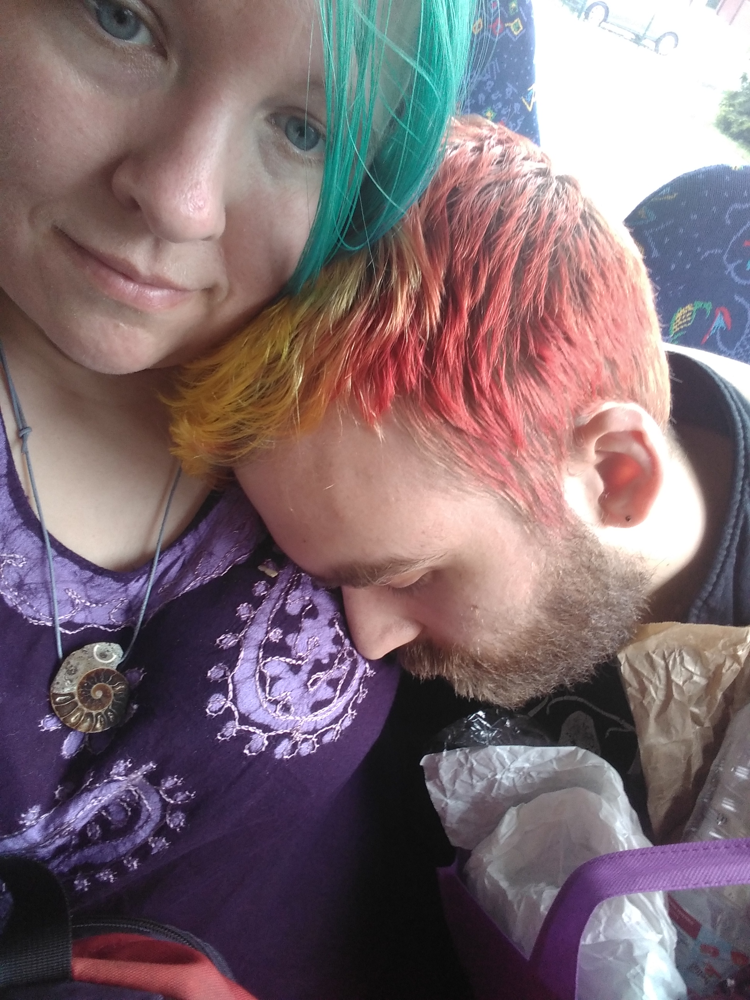
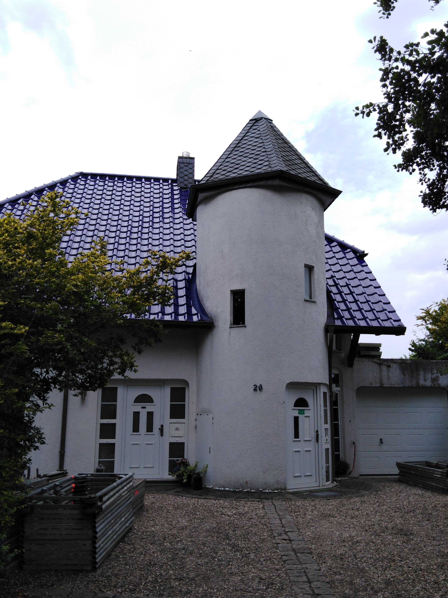
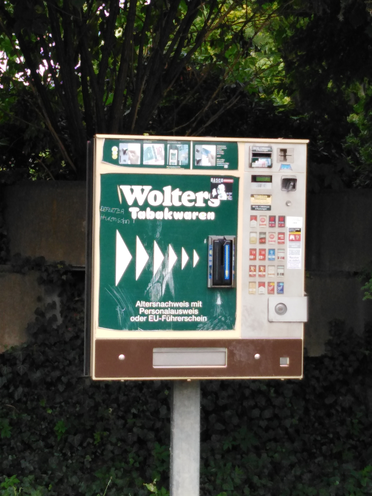
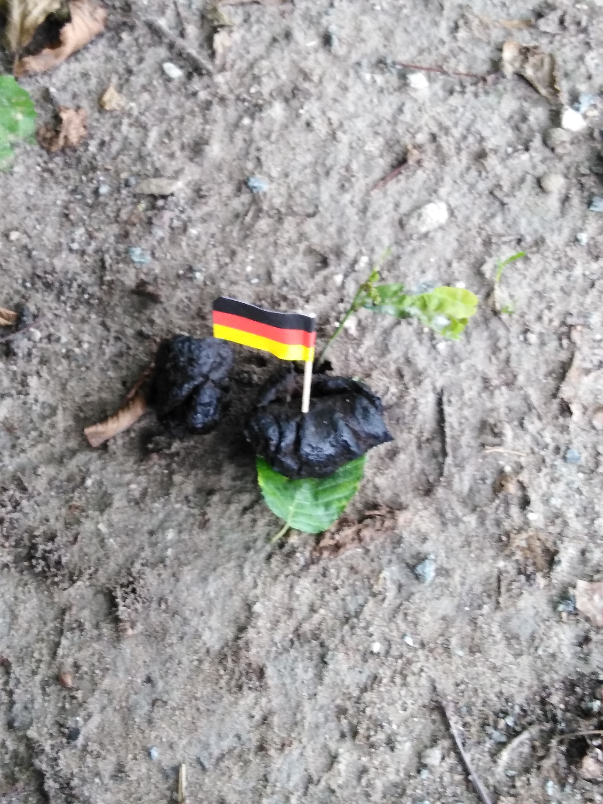
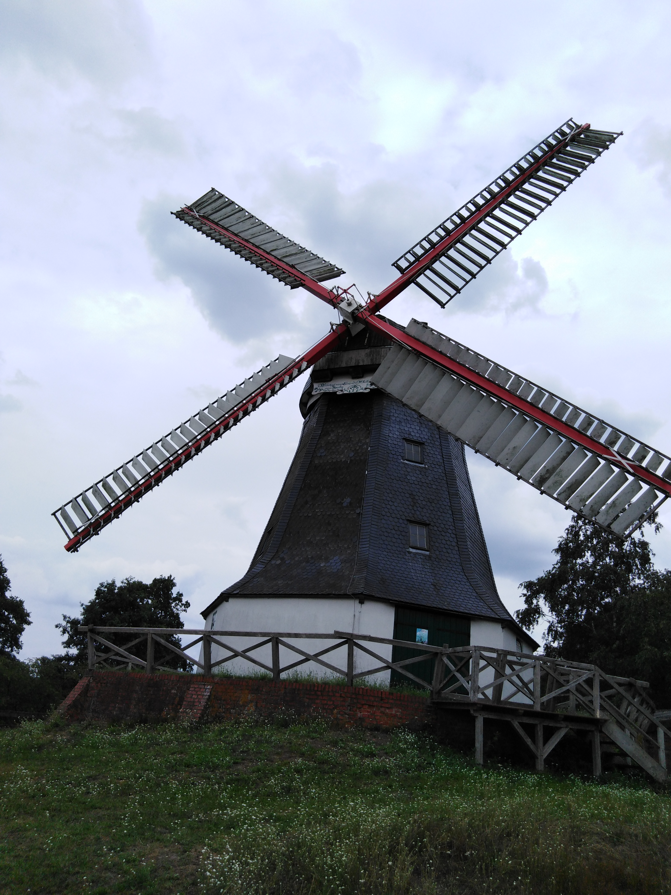
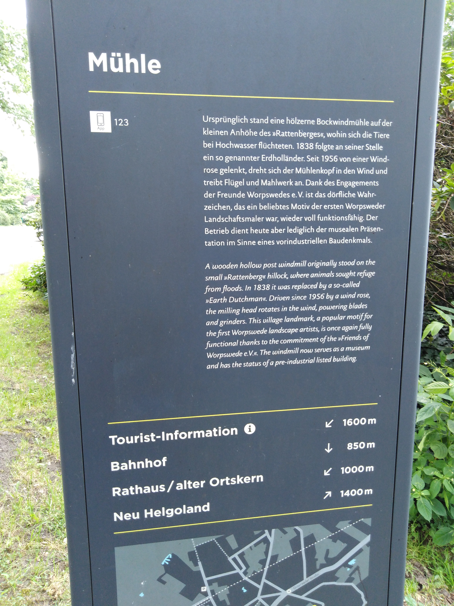

Worpswede
Page Navigation
About
After visting Bremen, we were supposed to go to Hamburg. However, after our Hamburg airbnb host attempted to screw us over, we
cancelled our airbnb reservation a few days before our departure for Germany. Airbnb handled the whole thing pretty well,
at least in terms of refunding us our money. If you're ever looking to stay at an airbnb in Hamburg, check with us first to
make sure you don't end up with the same skeezy lady (our experience is not reflected in her "superhost" reviews).
Now without a place to stay for two nights, we looked for other places around Bremen or Hamburg. We found a
farm to stay at in Worpswede, about an hour north of Bremen. Worpswede is a small, idyllic
town. The areas we saw were quite rural and full of nature - and corn, so much corn. Apparently a lot of corn is grown
in the area (we're not sure if it's feed corn or people corn).

Getting There (Top)
We had to take a rather local bus to Worpswede. During the week, it runs about once an hour; on the weekends, only a few
times a day. We had a bit of an adventure buying our bus tickets, as the machine in Bremen didn't dispense our second ticket.
Efforts to get our money back have, to date, been unsuccessful. I'd recommend just paying on the bus if you're in the same
situation so that you don't end up in the, well, same situation.
We were both tired by the time we got on the bus, and one of us got a nap.
Arrival (Top)
The bus let us off in the middle of a rural/residential neighborhood, and we then had to walk about a kilometer and a half
to our airbnb. I was a bit envious of the multiple bicyclists we passed - the roads were well paved, had plenty of shade,
and would be perfect for riding a bike around.
After a relaxing walk (admittedly, it would have been more relaxing without our bags), we eventually arrived at our airbnb.
Our host's father greeted us. I understood almost all of what he said, although he spoke only German. Thanks, high school
German 20 years ago! We then found our hostess, Mara, who showed us around the farm and to our quarters (which exceeded
our expectations - this was probably my favorite airbnb experience ever).
Food (Top)
We knew it wouldn't be easy to get to restaurants or stores, and we weren't sure if we'd have access to a refrigerator,
so we bought all of our food for our two days in Worpswede before we left Bremen. We brought pastries, baguettes, rolls, cheese,
bell peppers, a cucumber, and hard sausages. And, of course, water, candy, and soda. Gotta have the essentials. It turned out
there was indeed a refrigerator and our fears were for naught. But for our two days in Worpswede, we lived on a combination
of (mostly) carbs and cheese.
Around and About (Top)
Photo dump! On the way to the farm or on the farm itself.
This cool house with tower was near the bus stop

Another interesting house on the way to the airbnb
And a WTF. A cigarette dipensing machine on the road
in this rural area
And another. Feces from... something that someone had
then stuck a German flag in

An adorable sign. No clue what it's
telling us to do or not do

Representative example of how the road to the airbnb
looked
Lovely windmill on the way
Signage for said windmill

Mara, our host, surrounded by her flock

Likely the highlight of the trip for Sean:
having an adorable goat eat right out of his hand
{kind=link}
{kind=link}
{kind=link}
{kind=link}
{kind=link}
{kind=link}